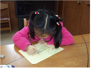
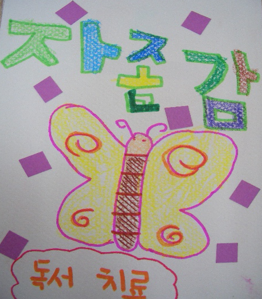

독서치료는 책을 이용하여 정서적, 심리적 건강을 위하여 사용하는 치료방법이다. 최근 독서치료는 신체적 문제 및 사회적 부적응 문제를 해소하기 위한 심리치료, 발달에 대한 예방적 문제를 위한 개인상담 및 집단활동 등에서 다양하게 활용되고 있다. 독서치료는 자신에 대한 수용, 주변에 대한 관심 뿐만 아니라 자신의 긍정적인 변화와 자긍심을 향상시키는 독서치료의 의의, 독서치료의 발달 배경에 대하여 살펴보고자 한다.
1. 독서치료의 의의
사전에 의하면 독서(讀書)란 책이나 글을 읽는 행위로써 지식과 정보를 얻고 인간관계의 이해를 도우며, 사물에 대한 사고의 틀을 넓혀주는 활동이다. 즉, 단순히 책 내용을 이해하여 지식이나 정보를 습득하는 것뿐만 아니라 정서적 안정, 언어능력 발달, 인간관계 이해, 다양한 간접체험, 세상과의 소통 등에 많은 도움을 준다. 이러한 독서를 활용한 독서치료(Bibliotherapy)란 책이나 미디어를 통하여 상담의 일부분으로 활용하여 내담자의 문제를 돕는 상담 방법이다.

독서치료는 고대부터 알려지고 실시되어 왔지만 biblion(책, 문학)과 therapeia(도움이 되다, 의학적으로 돕다, 병을 고쳐주다)라는 두 단어에서 유래된 것을 크라더스(Crothers, 1916)가 ‘Atlantic Monthly’에 개재하면서 사용되었다(Moody & Limper, 1971, 김현희 외, 2005).
독서치료를 심리나 정서적 치유의 관점에서 논의한 것은 20세기 이후이며 도널드 의학 사전(Dorland's Illustrated Medical Dicitionary)에서 “독서치료는 신경증을 치료하기 위해 문학작품을 선정하여 읽는 행위” 라고 하였다. Pardeck(1990), 하인즈와 하인즈-베리(Hynes & Hynes-Bery, 1994)는 “독서치료에서 훈련된 상담자는 참여자의 감정과 인지적 반응을 통합하도록 선택된 문학작품, 인쇄된 글, 시청각 자료 등에 대한 토론을 유도하여 내담자에 따라 임상적 또는 발달적으로 이끌어 가는 것이다.
이와 관련하여 김현희 외(2004)는 “독서치료는 발달상의 문제를 겪거나 정서적, 행동적 문제를 가진 내담자가 문학작품을 통해 토론, 글쓰기, 그림그리기, 역할놀이 등 상담자와 상호작용을 통해서 예방적 활동, 심리적 상담 등으로 문제를 해결하는데 있다.” 고 정의를 내렸다. 이와 같이 독서치료는 책이나 다양한 미디어를 통하여 내담자가 호소하는 문제에 대해 관찰자적, 객관적으로 조망하거나 판단을 내리도록 돕는 상담이라는 의미가 존재한다.

2. 독서치료의 발달 배경
독서치료에 대한 역사는 19세기 이집트의 카이로에 있는 병원에서 환자를 치료할 때 이슬람의 경전인 ‘코란’을 읽게 했던 점에서 독서치료의 유래를 찾아볼 수 있다(황의백, 1996). 1930년대와 1940년대에는 주로 정신병원에서 종교서나 문학작품을 읽는 활동을 포함한 치료 프로그램을 폭넓게 보여 주었다.
Delaney(1938)는 ‘병원은 독서치료를 할 수 있는 장소’ 라는 논문을 발표하여 입원하고 있는 환자들에게 독서 기회를 주는 것이 심리적인 병을 치료하는데 효과를 이끌어냈다. 이렇게 시작한 독서치료는 미국에서 1950년대부터 사례연구 및 실험연구가 활발하게 진행되어 독서치료가 사람의 행동을 변화시키는데 심리치료의 한 방법으로 치료적 가치를 이론적으로 입증하게 받았다(변우렬, 1996, 재인용).
1960년대 이르러 독서치료는 임상적으로 치료하기 위한 것과 교육적으로 어떤 문제를 예방하는 차원으로 사용하는 것으로 구별되기 시작했다. Zaccaria와 Moses(1968)는 저서에 ‘독서를 통한 발달의 촉진, 가르치고 상담하는 과정 중에 독서치료를 활용’이라는 내용으로 치료와 관련된 것을 제시하였다. 이후 독서치료가 일반적인 사람이나 정서 및 심리적으로 어려움을 겪는 내담자까지 긍정적 효과가 있다는 점이 부각되었다.
한국의 독서치료는 일본식 bibliotherapy를 그대로 받아들여 일반 학생들의 성격과 생활태도를 바꾸는 것과 비행청소년들을 선도한다는 목적으로 시작되었다. 초기에 독서치료가 인성에 미치는 긍정적인 효과에 대해 발표 후 이에 대한 연구들은 주로 청소년과 학교생활을 중심으로 발달적 독서치료가 이루어졌다. 1980년대부터 독서치료와 관련된 학위논문이 여러 편 발표되었고, 2000년대는 독서치료에 대한 관심이 급속히 높아졌음을 알 수 있다.
이와 같이 20세기 미국과 영국을 중심으로 병원 도서관에서 시작된 이후부터 독서치료에 대한 과학적인 연구가 활성화 되었다. 이러한 영향은 정신의학과 심리학이 활발하게 발달하는 계기가 되었으며, 독서치료에 대한 이론과 실제가 더욱 체계화되어 훈련받은 사서가 있는 병원 도서관과 공공 도서관이 설립이 확산되었다. 또한 아동학, 심리학, 사회복지학, 문학, 신학에 이르기까지 독서치료와 관련된 적용 범위가 활발하게 이루어지고 있다.
참고자료
- 김현희, 김세희, 강은주, 강은진, 김재숙, 신혜은, 정선혜, 김미령, 박연식, 배옥선, 신창호, 이송은, 이임숙, 전방실, 정순, 최경, 홍근민 공저(2004). 독서치료의 실제. 학지사.
- 김현희, 서정숙, 김세희, 김재숙, 강은주, 임영심, 박상희, 강미정, 김소연, 정은미, 전방실, 최경 공저(2005). 독서치료. 학지사.
- 박순길,권순황,김현진,선애순,한재금(2017). 아동상담, 양서원.
- 변우열(1996). 비행청소년 인성치료를 위한 독서치료, 도서관 논집. 26, 131-168.
- 황의백(1996). 독서요법. 범우사.
- Hynes, A. M., & Hynes-Berry， M. (1994). Biblio-poetry Therapy. The Interactive Process: A Handbook. St. C1oud. MN: North Star Press of St. Cloud.
- Moody, M. T., & Limper, H. K. (1971). Bihliotherapy: Methods and materials. Chicago: American Library Association.
- Pardeck, J. T. (1990). Using bibliotherapy in clinical practice with children. psychol report. 67, 1043-1049.
- Zaccaria, J. S., & Moses, H. A. (1968). Facilitating human development through reading: The use of bibliotherapy in teaching and counseling. In M. T. Moody & H. K. Limper (1971). Bibliotherapy: Methods. and materials. Chicago: American Library Association.
2022.01.11 - [분류 전체보기] - 문학과 아동문학의 의의 - 인간의 보편적인 윤리와 가치
문학과 아동문학의 의의 - 인간의 보편적인 윤리와 가치
아동 문학의 의의 인간은 책을 통해 과거의 역사와 인간의 삶을 알게 되고, 새로운 정보나 지식, 정서 등 직･간접적으로 습득할 수 있다. 문학이란 작가가 인간의 세계를 그린 작품이다. 문학은
think-sis.co.kr